creating_merged_lipids
Last updated: 2019-10-05
Checks: 4 3
Knit directory: lipids_mvp/
This reproducible R Markdown analysis was created with workflowr (version 1.4.0). The Checks tab describes the reproducibility checks that were applied when the results were created. The Past versions tab lists the development history.
The R Markdown file has unstaged changes. To know which version of the R Markdown file created these results, you’ll want to first commit it to the Git repo. If you’re still working on the analysis, you can ignore this warning. When you’re finished, you can run wflow_publish to commit the R Markdown file and build the HTML.
Great job! The global environment was empty. Objects defined in the global environment can affect the analysis in your R Markdown file in unknown ways. For reproduciblity it’s best to always run the code in an empty environment.
The command set.seed(20190925) was run prior to running the code in the R Markdown file. Setting a seed ensures that any results that rely on randomness, e.g. subsampling or permutations, are reproducible.
Great job! Recording the operating system, R version, and package versions is critical for reproducibility.
- create table
- session-info-chunk-inserted-by-workflowr
- unnamed-chunk-1
- unnamed-chunk-2
- unnamed-chunk-3
- unnamed-chunk-4
- unnamed-chunk-5
- unnamed-chunk-6
- unnamed-chunk-7
To ensure reproducibility of the results, delete the cache directory workingwithdata_cache and re-run the analysis. To have workflowr automatically delete the cache directory prior to building the file, set delete_cache = TRUE when running wflow_build() or wflow_publish().
Using absolute paths to the files within your workflowr project makes it difficult for you and others to run your code on a different machine. Change the absolute path(s) below to the suggested relative path(s) to make your code more reproducible.
| absolute | relative |
|---|---|
| ~/lipids_mvp/data/merged_z.txt | data/merged_z.txt |
| ~/lipids_mvp/data/znew.txt | data/znew.txt |
| ~/lipids_mvp/data/max_ld_block.txt | data/max_ld_block.txt |
| ~/lipids_mvp/data/EDcov.Rds | data/EDcov.Rds |
| ~/lipids_mvp/data/mashresult.rds | data/mashresult.rds |
| ~/lipids_mvp/data/mashcomplete.rds | data/mashcomplete.rds |
| ~/lipids_mvp/data/ash.rds | data/ash.rds |
Great! You are using Git for version control. Tracking code development and connecting the code version to the results is critical for reproducibility. The version displayed above was the version of the Git repository at the time these results were generated.
Note that you need to be careful to ensure that all relevant files for the analysis have been committed to Git prior to generating the results (you can use wflow_publish or wflow_git_commit). workflowr only checks the R Markdown file, but you know if there are other scripts or data files that it depends on. Below is the status of the Git repository when the results were generated:
Ignored files:
Ignored: .DS_Store
Ignored: .Rhistory
Ignored: analysis/.DS_Store
Ignored: analysis/.RData
Ignored: analysis/.Rhistory
Ignored: analysis/workingwithdata_cache/
Ignored: data/.DS_Store
Ignored: data/Archive.zip.gz
Ignored: data/EDcov.Rds
Ignored: data/ash.rds
Ignored: data/mashcomplete.rds
Ignored: data/mashcomplete.rds.zip
Ignored: data/max_ld_block.txt
Ignored: data/merged_betas.txt
Ignored: data/merged_se.txt
Ignored: data/merged_z.txt
Ignored: data/znew.txt
Ignored: docs/.DS_Store
Untracked files:
Untracked: analysis/looking_at_significance.Rmd
Unstaged changes:
Modified: analysis/workingwithdata.Rmd
Note that any generated files, e.g. HTML, png, CSS, etc., are not included in this status report because it is ok for generated content to have uncommitted changes.
These are the previous versions of the R Markdown and HTML files. If you’ve configured a remote Git repository (see ?wflow_git_remote), click on the hyperlinks in the table below to view them.
| File | Version | Author | Date | Message |
|---|---|---|---|---|
| Rmd | 7142cc6 | Sarah Urbut | 2019-10-04 | Updated plots |
| html | 7142cc6 | Sarah Urbut | 2019-10-04 | Updated plots |
| Rmd | 73da9ad | Sarah Urbut | 2019-10-03 | Update |
| html | 73da9ad | Sarah Urbut | 2019-10-03 | Update |
| html | ca158bf | Sarah Urbut | 2019-10-03 | Update docs |
R Markdown
Here we will try to merge based on common chr.position (per Hg18) names.
We recognize that the alleles have been flipped to make all effects positive Let’s use HDL as reference
ref=m[,3]
for(x in seq(1:3)){
betaindex=4+2*x
beta=m[,betaindex]
allele=betaindex-1
a=m[,allele]
test=a==ref;test[test=="FALSE"]=-1
beta=beta*test
m[,betaindex]=beta}
head(m)
write.table(m,"merged_betas.txt")
## Creating SE Table
n=merge(hdl[,c(1,3,7)],ldl[,c(1,7)],by=1);names(n)[3]="hdl";names(n)[4]="ldl"
n=merge(n,tg[,c(1,7)],by=1);names(n)[5]="tg"
n=merge(n,tc[,c(1,7)],by=1);names(n)[6]="tc"
write.table(n,"merged_se.txt")
z=m[,c(4,6,8,10)]/n[,c(3:6)]
z=cbind(m[,c(1,2)],z)
write.table(z,"merged_z.txt")To run mashr, we need a matrix of maxes. The best way to do this is to choose the max effect across conditions per LD block, as described in Pickrell et al. Only then can we assume the maxes used to create covariance matrices are truly linearly independent. We will select SNPS falling within each of the 1700 LD blocks and choose SNP with maximum absolute effect acrtoss conditions.
#z=read.table("~/lipids_mvp/data/merged_z.txt")
#
# bed=read.table("~/Downloads/ld_chunk.bed")
# head(bed)
# z=z[1:2437099,]### last 3 are rsIDs from mislabeled columns
# library("reshape")
# df=transform(z, foo = colsplit(z$SNP_hg18, split = "\\:", names = c('Chr', 'Pos')))
#
# znew=cbind(df$foo.Chr,df$foo.Pos,z[,-1])
# maxes=apply(znew[,c("hdl","ldl","tg","tc")],1,function(x){max(abs(x))})
# znew=cbind(znew,maxes)max_block=data.frame(matrix(ncol = ncol(znew), nrow = nrow(bed)))
colnames(max_block)=colnames(znew)
for(i in 1:nrow(bed)){
chr=bed[i,1]
start=bed[i,2]
stop=bed[i,3]
in_chrom=znew[znew$`df$foo.Chr`==chr,]
goodguys=in_chrom[in_chrom$`df$foo.Pos`>start&in_chrom$`df$foo.Pos`<stop,]
if(nrow(goodguys)>0) {
z.max=which.max(goodguys[,"maxes"])
z_good=goodguys[z.max,]
} else {
z_good=rep(0,ncol(max_block))
}
z_good=data.table(z_good,stringsAsFactors = T)
z_good$`df$foo.Chr`=as.character(z_good$`df$foo.Chr`)
z_good$rsid=as.character(z_good$rsid)
max_block[i,]=z_good
#print(i)
}
max_block=na.omit(max_block)
write.table(max_block,"max_ld_block.txt")Now, we’re ready to mash!
znew=read.table("~/lipids_mvp/data/znew.txt")
library("mashr")
library("flashr")
max_block=read.table("~/lipids_mvp/data/max_ld_block.txt")
source('~/Dropbox/jointData/flashscript.R')
# identify a random subset of 20000 tests
random.subset = sample(1:nrow(znew),20000)
zmash=as.matrix(znew[,c("hdl","ldl","tg","tc")]);rownames(zmash)=znew$rsid
data.temp = mash_set_data(zmash[random.subset,],alpha = 1)
Vhat = estimate_null_correlation_simple(data.temp)
library("lattice")
clrs = colorRampPalette((c("#D73027","#FC8D59","#FEE090","#FFFFBF", "#E0F3F8","#91BFDB","#4575B4")))(64)
print(levelplot(Vhat,col.regions = clrs,xlab = "",ylab = "",colorkey = TRUE,main="VHAT"))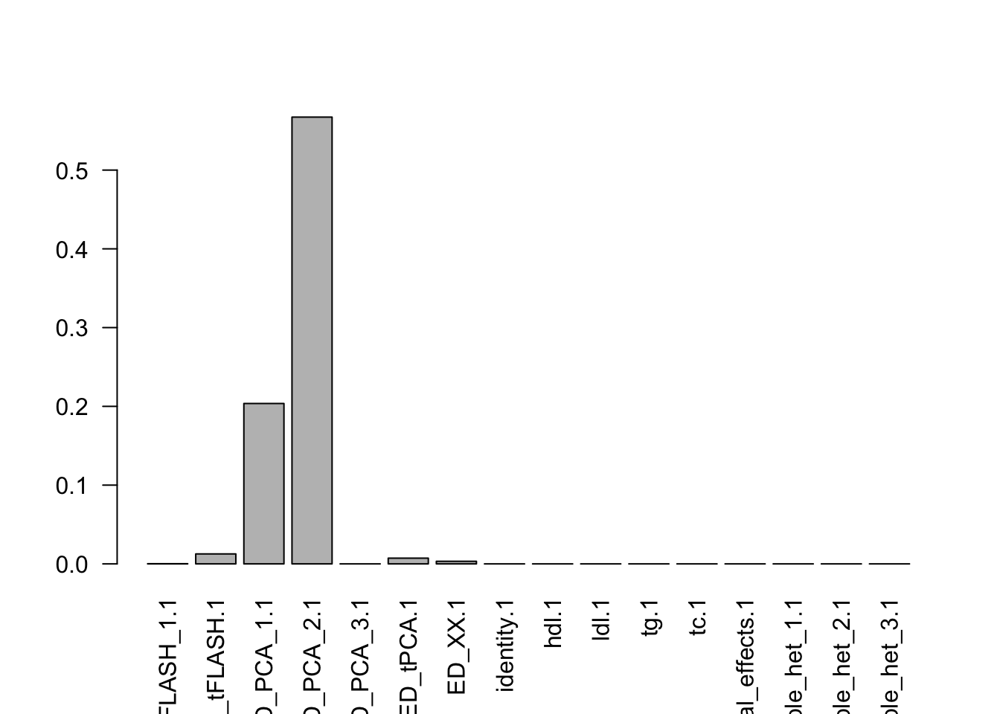
| Version | Author | Date |
|---|---|---|
| ca158bf | Sarah Urbut | 2019-10-03 |
rm(data.temp)
data.random = mash_set_data(zmash[random.subset,],alpha = 1,V=Vhat)
zmax=apply(max_block[,c(4:7)],2,function(x){as.numeric(x)});rownames(zmax)=max_block$rsid
data.strong = mash_set_data(zmax,alpha = 1,V=Vhat)
U.pca = cov_pca(data.strong,3)
# U.flash=cov_flash(data.strong, non_canonical = TRUE)
# X.center = apply(data.strong$Bhat, 2, function(x) x - mean(x))
# U.ed = cov_ed(data.strong, c(U.flash, U.pca, list("XX" = t(X.center) %*% X.center / nrow(X.center))))
# saveRDS(U.ed,"~/lipids_mvp/data/EDcov.Rds")
U.ed=readRDS("~/lipids_mvp/data/EDcov.Rds")
U.c = cov_canonical(data.random)
m = mash(data.random, Ulist = c(U.ed,U.c),outputlevel = 1) - Computing 20000 x 321 likelihood matrix.
- Likelihood calculations took 2.13 seconds.
- Fitting model with 321 mixture components.
- Model fitting took 31.55 seconds.k=length(m$fitted_g$Ulist)
l=length(m$fitted_g$grid)
pimat=matrix(m$fitted_g$pi[-1],nrow=l,byrow=T)
colnames(pimat)=names(m$fitted_g$pi)[2:(k+1)]
barplot(colSums(pimat),las=2)Now, let’s plot the patterns of sharing as the correlation matrix of the estimated covariance matrices. We can see that from the barplot, there are the following matrices: ED_FLASH_1.1, ED_tFLASH.1, ED_PCA_1.1, ED_PCA_2.1, ED_PCA_3.1, ED_tPCA.1, ED_XX.1, identity.1, hdl.1, ldl.1, tg.1, tc.1, equal_effects.1, simple_het_1.1, simple_het_2.1, simple_het_3.1.
library("lattice")
for(i in 1:k){
z.num=as.matrix(cov2cor(m$fitted_g$Ulist[[i]]))
colnames(z.num)=row.names(z.num)=colnames(zmash)
clrs = colorRampPalette((c("#D73027","#FC8D59","#FEE090","#FFFFBF", "#E0F3F8","#91BFDB","#4575B4")))(64)
z.num[lower.tri(z.num)] = NA
print(levelplot(z.num,col.regions = clrs,xlab = "",ylab = "",colorkey = TRUE,main=paste0(names(m$fitted_g$Ulist)[[i]])))
}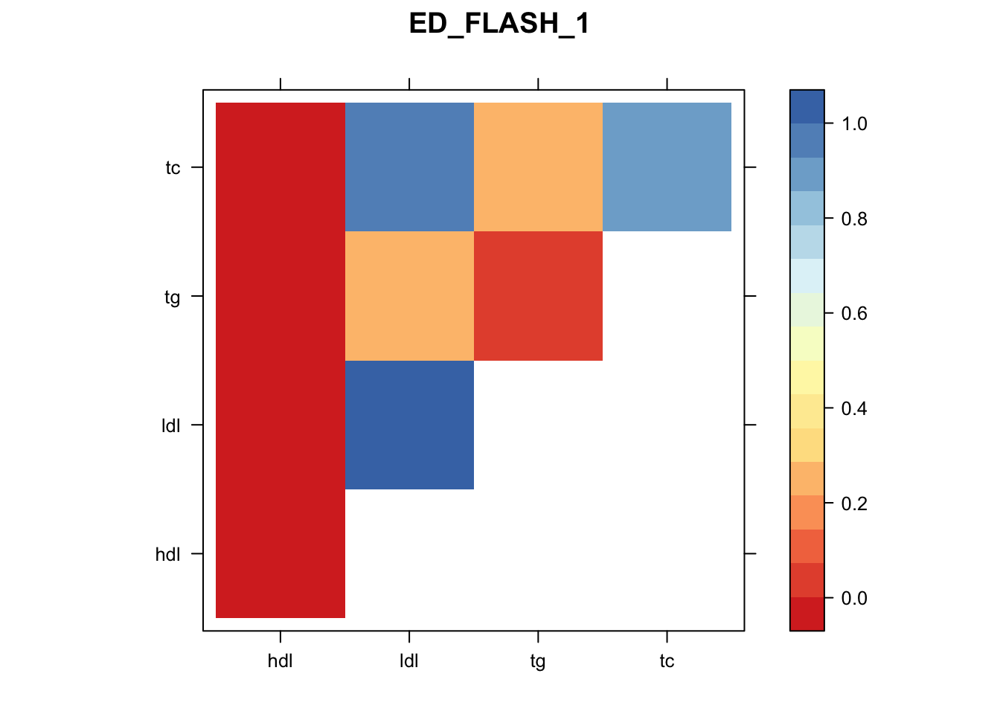
| Version | Author | Date |
|---|---|---|
| ca158bf | Sarah Urbut | 2019-10-03 |

| Version | Author | Date |
|---|---|---|
| ca158bf | Sarah Urbut | 2019-10-03 |
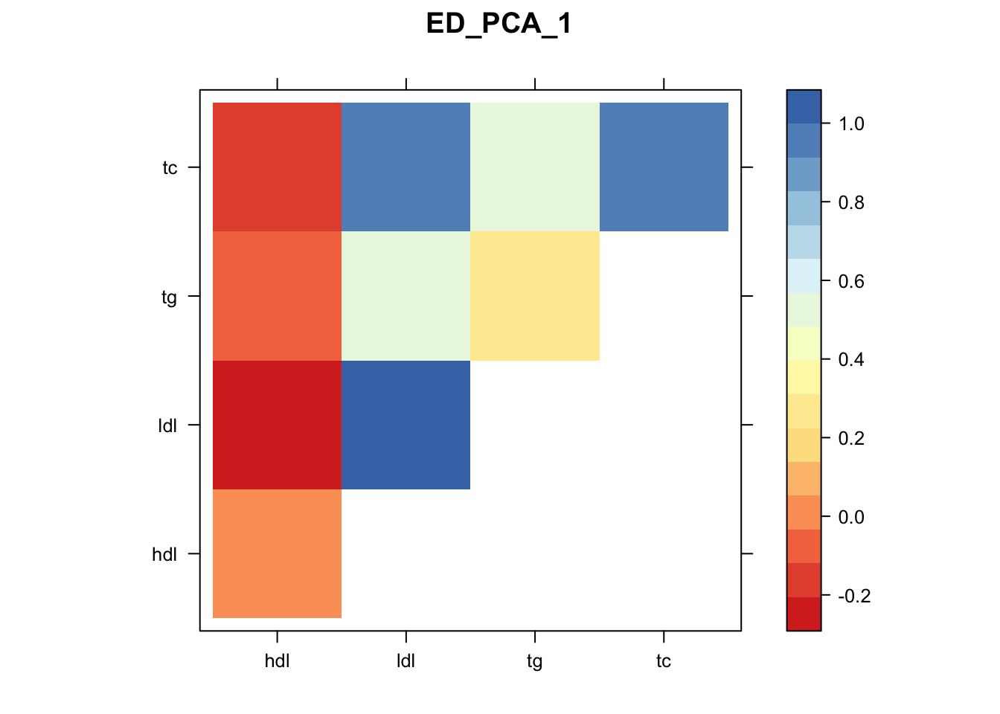
| Version | Author | Date |
|---|---|---|
| ca158bf | Sarah Urbut | 2019-10-03 |
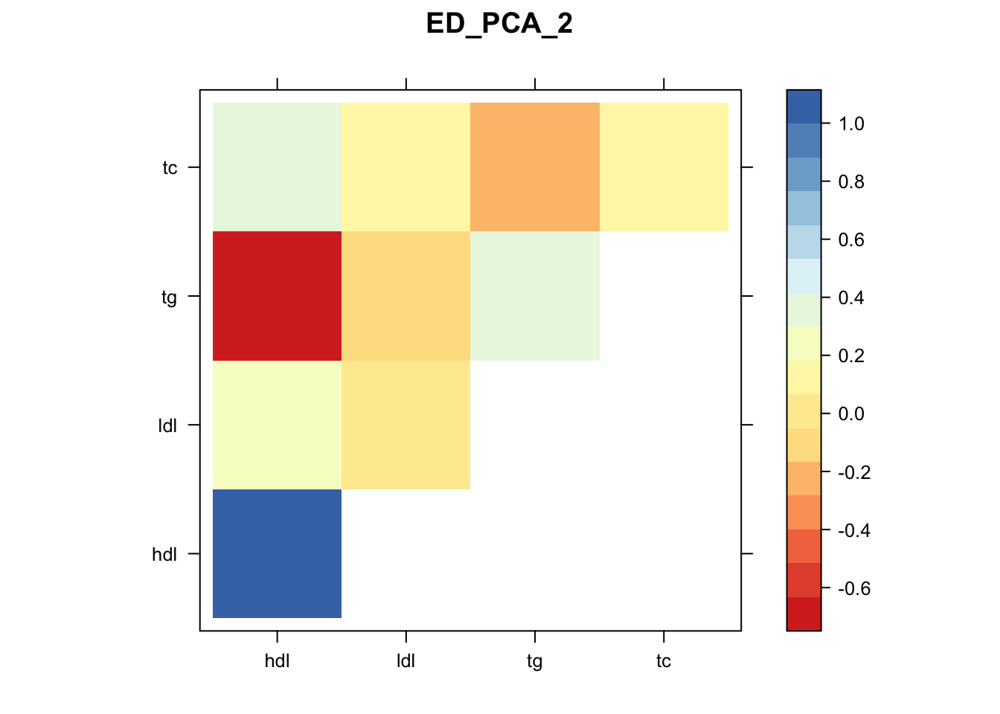
| Version | Author | Date |
|---|---|---|
| ca158bf | Sarah Urbut | 2019-10-03 |
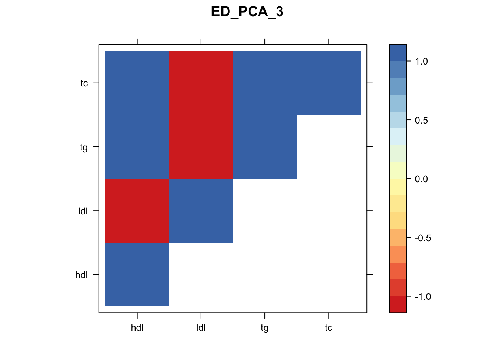
| Version | Author | Date |
|---|---|---|
| ca158bf | Sarah Urbut | 2019-10-03 |
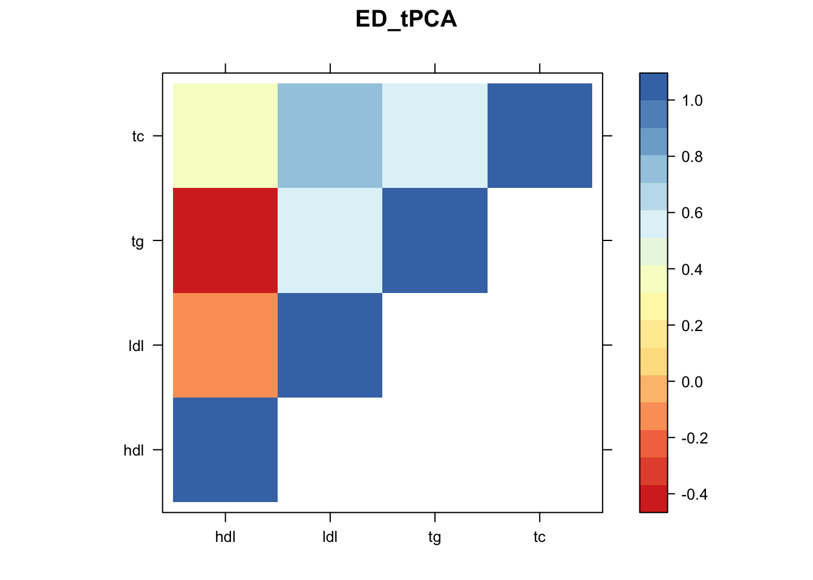
| Version | Author | Date |
|---|---|---|
| ca158bf | Sarah Urbut | 2019-10-03 |
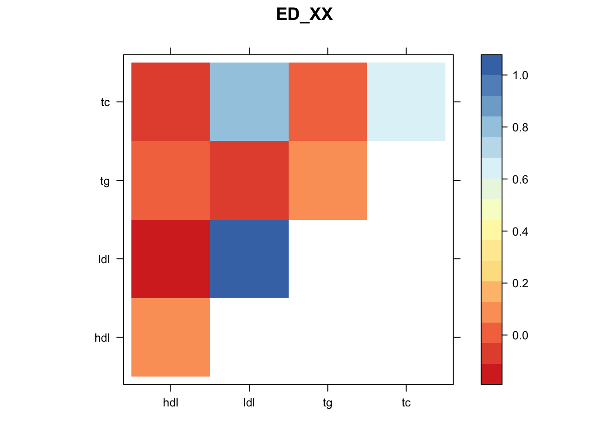
| Version | Author | Date |
|---|---|---|
| ca158bf | Sarah Urbut | 2019-10-03 |
Warning in cov2cor(m$fitted_g$Ulist[[i]]): diag(.) had 0 or NA entries;
non-finite result is doubtful
| Version | Author | Date |
|---|---|---|
| ca158bf | Sarah Urbut | 2019-10-03 |
Warning in cov2cor(m$fitted_g$Ulist[[i]]): diag(.) had 0 or NA entries;
non-finite result is doubtful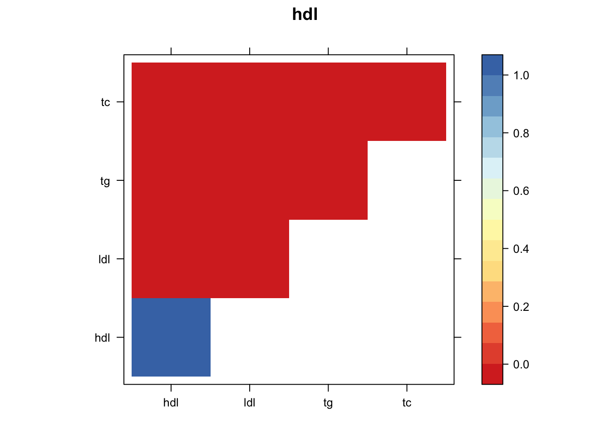
| Version | Author | Date |
|---|---|---|
| ca158bf | Sarah Urbut | 2019-10-03 |
Warning in cov2cor(m$fitted_g$Ulist[[i]]): diag(.) had 0 or NA entries;
non-finite result is doubtful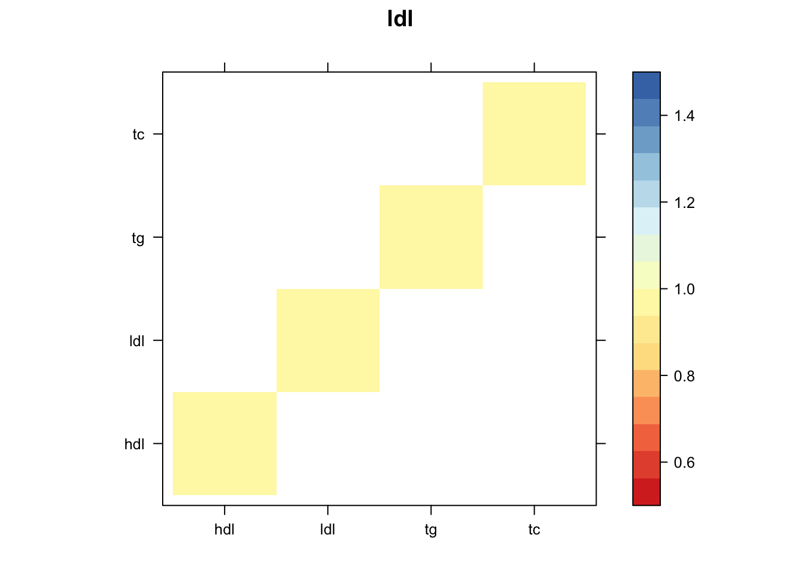
| Version | Author | Date |
|---|---|---|
| ca158bf | Sarah Urbut | 2019-10-03 |
Warning in cov2cor(m$fitted_g$Ulist[[i]]): diag(.) had 0 or NA entries;
non-finite result is doubtful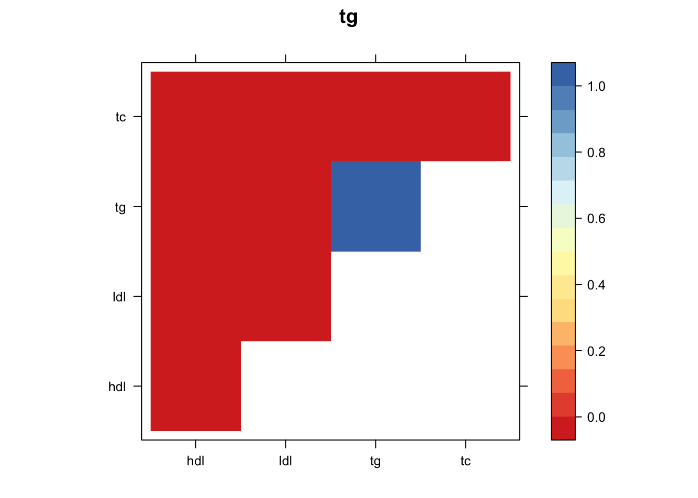
| Version | Author | Date |
|---|---|---|
| ca158bf | Sarah Urbut | 2019-10-03 |
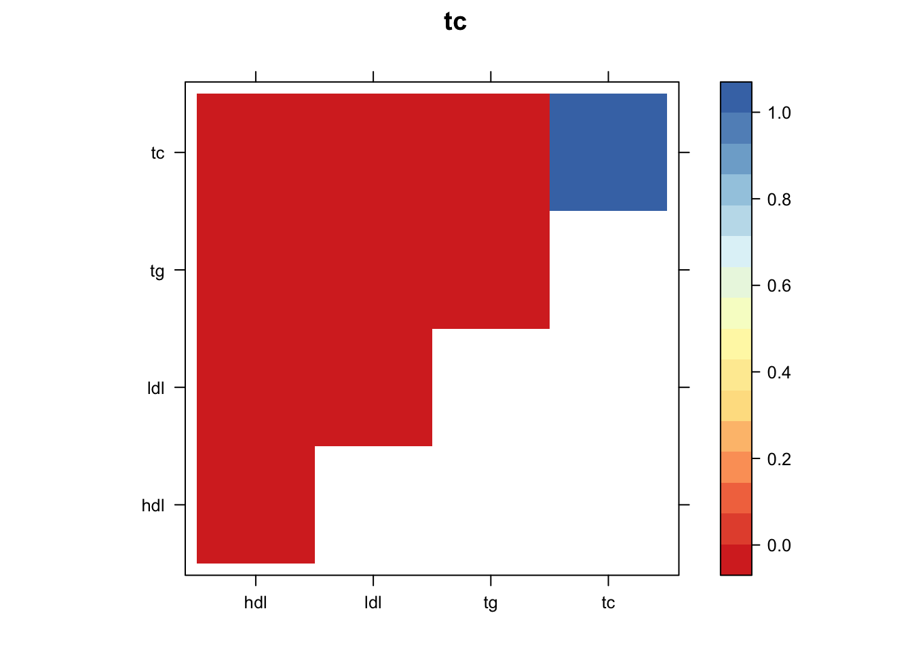
| Version | Author | Date |
|---|---|---|
| ca158bf | Sarah Urbut | 2019-10-03 |
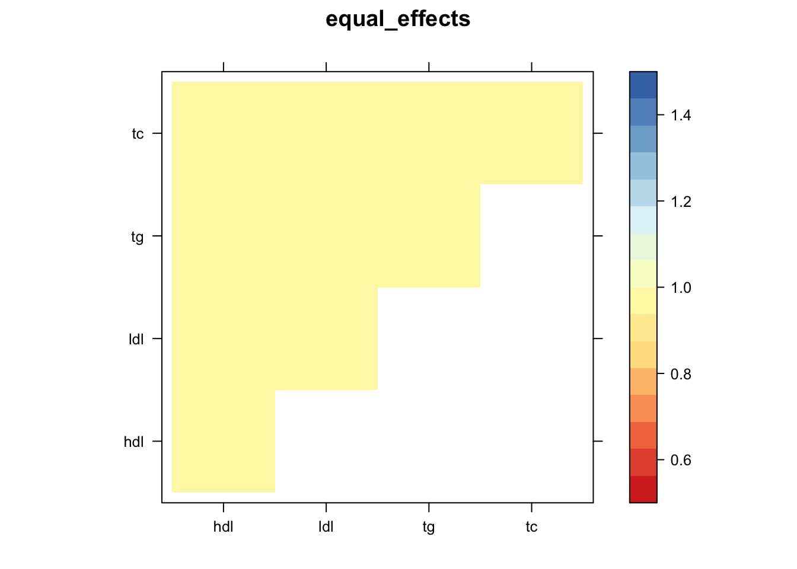
| Version | Author | Date |
|---|---|---|
| ca158bf | Sarah Urbut | 2019-10-03 |
| Version | Author | Date |
|---|---|---|
| ca158bf | Sarah Urbut | 2019-10-03 |

| Version | Author | Date |
|---|---|---|
| ca158bf | Sarah Urbut | 2019-10-03 |
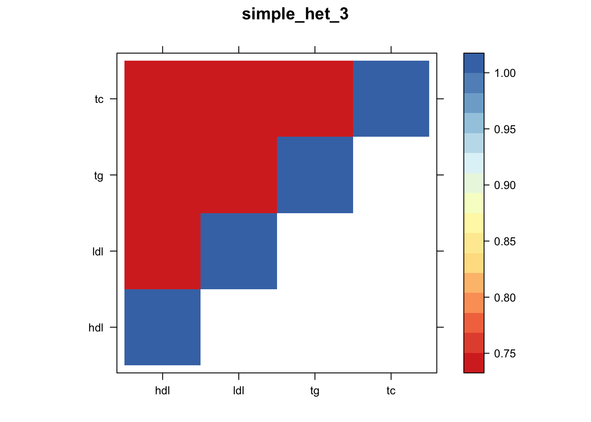
| Version | Author | Date |
|---|---|---|
| ca158bf | Sarah Urbut | 2019-10-03 |
Now we can compute posteriors,
mash.data=mash_set_data(zmash,V = Vhat,alpha = 1)
m$result=mash_compute_posterior_matrices(m, mash.data, algorithm.version = "Rcpp")
saveRDS(m,"~/lipids_mvp/data/mashresult.rds")Let’s take a look:
m=readRDS("~/lipids_mvp/data/mashcomplete.rds")
head(m$result$PosteriorMean) hdl ldl tg tc
rs1172982 0.06015013 0.10542699 0.002012870 0.11805417
rs1172981 0.28626776 0.05244131 -0.188875181 0.10104744
rs11166327 -0.11849671 -0.01776064 0.085266561 -0.03603278
rs4908018 0.31317283 0.05412064 -0.209288205 0.10681010
rs2392072 0.05437422 0.09588751 0.002789049 0.10754994
rs12129588 0.34618757 0.07306129 -0.225178675 0.13174043head(m$result$lfsr) hdl ldl tg tc
rs1172982 0.6283334 0.5228317 0.6311741 0.5223916
rs1172981 0.4205101 0.4270629 0.4196412 0.4274541
rs11166327 0.5462653 0.5541580 0.5434676 0.5553625
rs4908018 0.4001065 0.4115782 0.3989821 0.4121384
rs2392072 0.6310612 0.5339740 0.6339992 0.5334568
rs12129588 0.3834876 0.3805365 0.3827029 0.3809647lfsr=m$result$lfsr
s=rowSums(lfsr<=0.05)
hist(s[s>1],freq=FALSE,main="Number of Conditions")#ash.z=apply(zmash,2,function(x){ashr::ash(x,sebetahat = rep(1,length(x)))})
#saveRDS(ash.z,"../data/ash.rds")
ash.z=readRDS("~/lipids_mvp/data/ash.rds")
ashresults=cbind(ash.z$hdl$result$PosteriorMean,ash.z$ldl$result$PosteriorMean,ash.z$tg$result$PosteriorMean,ash.z$tc$result$PosteriorMean)
ashlfsr=cbind(ash.z$hdl$result$lfsr,ash.z$ldl$result$lfsr,ash.z$tg$result$lfsr,ash.z$tc$result$lfsr)
sum(ashlfsr<0.05)[1] 29301Here 29301 SNPS x Conditions are less than 0.05 using a univariate appropach and 80539 are less than 0.05 with a joint approach, a roughly 250% increase. Furthermore, 32176 SNPS are significant in at least one condition wiht a juint approach, while 18099 with a univariate one.
sessionInfo()R version 3.5.2 (2018-12-20)
Platform: x86_64-apple-darwin15.6.0 (64-bit)
Running under: macOS Mojave 10.14.6
Matrix products: default
BLAS: /Library/Frameworks/R.framework/Versions/3.5/Resources/lib/libRblas.0.dylib
LAPACK: /Library/Frameworks/R.framework/Versions/3.5/Resources/lib/libRlapack.dylib
locale:
[1] en_US.UTF-8/en_US.UTF-8/en_US.UTF-8/C/en_US.UTF-8/en_US.UTF-8
attached base packages:
[1] stats graphics grDevices utils datasets methods base
other attached packages:
[1] lattice_0.20-38 flashr_0.6-3 mashr_0.2.21.0631 ashr_2.2-37
[5] reshape_0.8.8
loaded via a namespace (and not attached):
[1] Rcpp_1.0.1 pillar_1.4.2 compiler_3.5.2
[4] git2r_0.26.1 plyr_1.8.4 highr_0.8
[7] workflowr_1.4.0 iterators_1.0.10 tools_3.5.2
[10] digest_0.6.20 tibble_2.1.3 gtable_0.3.0
[13] evaluate_0.14 pkgconfig_2.0.2 rlang_0.4.0
[16] Matrix_1.2-17 foreach_1.4.4 rstudioapi_0.10
[19] yaml_2.2.0 parallel_3.5.2 mvtnorm_1.0-11
[22] xfun_0.8 dplyr_0.8.3 stringr_1.4.0
[25] knitr_1.23 fs_1.3.1 tidyselect_0.2.5
[28] rprojroot_1.3-2 grid_3.5.2 glue_1.3.1
[31] R6_2.4.0 rmarkdown_1.14 mixsqp_0.1-97
[34] rmeta_3.0 reshape2_1.4.3 purrr_0.3.2
[37] ggplot2_3.2.0 magrittr_1.5 scales_1.0.0
[40] backports_1.1.4 codetools_0.2-16 htmltools_0.3.6
[43] MASS_7.3-51.4 abind_1.4-5 assertthat_0.2.1
[46] softImpute_1.4 colorspace_1.4-1 stringi_1.4.3
[49] lazyeval_0.2.2 munsell_0.5.0 doParallel_1.0.14
[52] pscl_1.5.2 truncnorm_1.0-8 SQUAREM_2017.10-1
[55] crayon_1.3.4